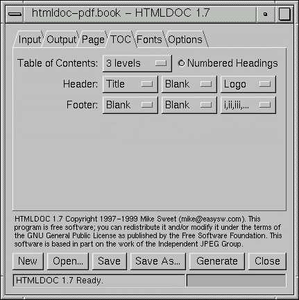
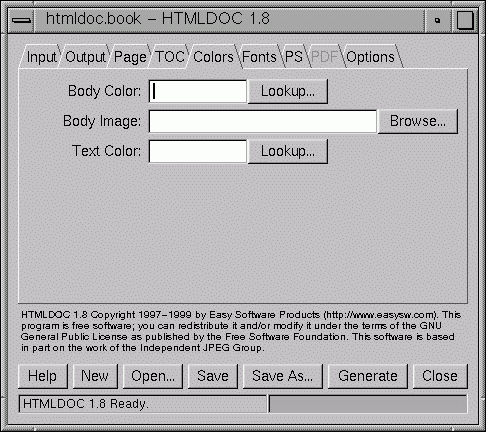
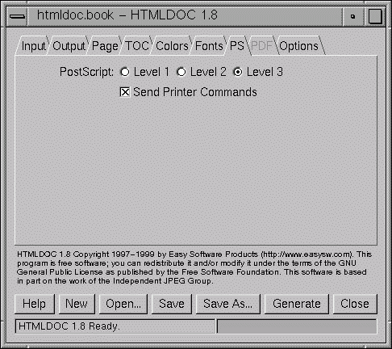

This chapter describes all of the GUI controls in HTMLDOC.
The HTMLDOC GUI
The HTMLDOC GUI (Figures 5 through 13) is contained in a single window
showing the input, output, and generation options. At the bottom are buttons
to load, save, and generate documents.
Document File Operations
HTMLDOC stores the HTML files, settings, and options in
.BOOK files. The buttons on the bottom of the
HTMLDOC window allow you manage these files and generate
formatted documents.
New
The New button starts a new document. A confirmation dialog will
appear if you have not saved the changes to the existing document.
Open...
The Open... button retrieves a document that you have saved
previously. A file chooser dialog is
displayed that allows you to pick an existing book file.
Save
The Save button saves the current document. A
file chooser dialog is displayed if there is
no filename assigned to the current document.
Note: Saving a document is not the same as generating
a document. The book files saved to disk by the Save and
Save As... buttons are not the final HTML,
PDF, or PostScript output files. You generate those files by clicking
on the Generate button.
Save As...
The Save As... button saves the current document to a new
file. A file chooser dialog is displayed to
allow you to specify the new document filename.
Note: Saving a document is not the same as generating
a document. The book files saved to disk by the Save and
Save As... buttons are not the final HTML,
PDF, or PostScript output files. You generate those files by clicking
on the Generate button.
Generate
The Generate button generates the current document, creating
the specified HTML, PDF, or PostScript file(s) as needed. The progress
meter at the bottom of the window will show the progress as each page or
file is formatted and written.
Note: Generating a document is not the same as
saving a document. To save the current HTML files and
settings in the HTMLDOC GUI, click on the Save or
Save As... buttons instead.
Close
The Close button closes the HTMLDOC window.

Figure 5 - The Input Tab
The Input Tab
The input tab lists all of the HTML source files that are used to generate
the document. You also specify the type of document (book or web page) and
the title and logo images in this tab.
Document Type
The Book radio button specifies that the input files are
structured with headings. The Web Page radio button specifies
unstructured files.
Input Files
The Input Files list shows all of the HTML input files that will
be used to produce the document. Double-click on files to edit them.
Add Files...
The Add Files... button displays the file
chooser dialog, allowing you to select one or more HTML files to include
in the document.
Edit Files...
The Edit Files... button starts the specified editor program
to edit the files selected in the Input Files list. Select
one or more files in the Input Files list to enable the
Edit Files... button.
Delete Files
The Delete Files button removes the selected files from the
Input Files list. Select one or more files in the Input
Files list to enable the Delete Files button.
The Delete Files button only removes the files from the
Input Files list. The files are not removed
from disk.
Move Up
The Move Up button moves the selected files in the Input
Files list up one line in the list. To enable the Move Up
button select one or more files in the Input Files list.
Move Down
The Move Down button moves the selected files in the Input
Files list down one line in the list. To enable the Move Down
button select one or more files in the Input Files list.
Logo Image
The Logo Image field contains the filename for an image to be
shown in the header or footer of pages, and in the navigation bar of HTML
files.
Click on the Browse... button to select a logo image file using
the file chooser dialog.
Title Image
The Title Image field contains the filename for an image to be
shown on the title page.
Click on the Browse... button to select a title image file using
the file chooser dialog.

Figure 6 - The Output Tab
The Output Tab
The output tab specifies where your document will be generated, the output
format, and some of the generic output options.
Output To
The File radio button selects output to a single file. The
Directory radio button selects output to multiple files in the
named directory.
Directory output is not available when generating PDF files.
Output Path
The Output Path field contains the output directory or filename.
Click on the Browse... button to choose an output file using the
file chooser dialog.
Output Format
The HTML radio button selects HTML output, the PS
radio button selects PostScript output, and the PDF radio button
selects PDF output.
Output Options
The Grayscale check box selects grayscale output for
PostScript and PDF files. The Title Page check box specifies
that a title page should be generated for the document. The JPEG
Big Images check box specifies that JPEG compression should be
applied to continuous-tone images.
Compression
The Compression slider controls the amount of Flate
compression that is used when writing PDF or Level 3 PostScript output.
JPEG Quality
The JPEG Quality slider controls the quality level used
when JPEG compressing continuous-tone images.

Figure 7 - The Page Tab
The Page Tab
The page tab defines the page header, footer, size, and margins for
PostScript and PDF output.
Page Size
The Page Size field contains the current page size. Click on the
arrow button to choose a standard page size.
HTMLDOC supports the following standard page size names:
- Letter - 8.5x11in (216x279mm)
- A4 - 8.27x11.69in (210x297mm)
- Universal - 8.27x11in (210x279mm)
Click in the Page Size field and enter the page width
and length separated by the letter "x" to select a custom page size.
Append the letters "in" for inches, "mm" for millimeters, or "cm" for
centimeters.
2-Sided
Click in the 2-Sided check box to select 2-sided (duplexed)
output.
Landscape
Click in the Landscape check box to select landscape output.
Top, Left, Right, and Bottom
Click in the Top, Left, Right, and
Bottom fields and enter the new margin values to change
them. Append the letters "in" for inches, "mm" for millimeters, or "cm"
for centimeters.
Header and Footer
Select the desired text in each of the option buttons to customize the
header and footer for the document/body pages. The leftmost option
buttons set the text that is left-justified, while the middle buttons
set the text that is centered and the right buttons set the text that
is right-justified.

Figure 8 - The TOC Tab
The TOC Tab
The TOC tab defines the table-of-contents options.
Table of Contents
Select the desired number of levels from the Table of Contents
option button.
Numbered Headings
Click in the Numbered Headings check box to automatically number
the headings in the document.
Header and Footer
Select the desired text in each of the option buttons to customize the
header and footer for the tables-of-contents pages. The leftmost option
buttons set the text that is left-justified, while the middle buttons
set the text that is centered and the right buttons set the text that
is right-justified.
Title
Enter the desired title for the table-of-contents in the Title
field.

Figure 8 - The Colors Tab
The Colors Tab

Figure 8 - The Fonts Tab
The Fonts Tab

Figure 8 - The PS Tab
The PS Tab

Figure 8 - The PDF Tab
The PDF Tab

Figure 8 - The Options Tab
The Options Tab